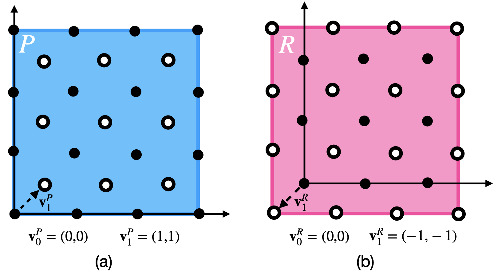

Lattice Tensors
We’ve defined the lattice structures over which we want to operate, but they currently don’t hold any data. As we implied earlier, we don’t intend for you to explicitly create LatticeTensors; most of the time you will want to use the Lattice instance as a factory. For example:
from ncdl import Lattice
import torch
qc = Lattice("quincunx")
lt = qc(
torch.rand(1, 3, 4, 4),
torch.rand(1, 3, 3, 3)
)
Consistency
Lattice tensors have a slight oddity about them. It’s easiest to illustrate this with a picture:
{kind=link}
These two lattice tensors occupy different regions, but have the same base geometry (so we should be able to add/subtract/perform arithmetic on them; this is compatability and we talk about it in the paper). In general it is possible for grids to interleave in many ways. This is an oddity specific to lattice tensors that we must take care to implement. If we don’t allow this, the overall restricted grid structures we can represent are limited, also padding becomes less robust (we would be limited to certain types of padding).
from ncdl import Lattice
import torch
qc = Lattice("quincunx")
lt = qc(
{
(0,0): torch.rand(1, 3, 3, 3),
(-1,-1): torch.rand(1, 3, 4, 4)
}
)
Lattice Tensor Class
|
A LatticeTensor container is the base data structure for processing data on non-Cartesian lattices. |
LatticeTensor Members
|
Returns the underlying tensor for a given coset index. |
Tests if a point, represented as an integer numpy array is on the given lattice. |
|
Analog of tensor.clone(), returns a new LatticeTensor copy that is still part of the computational graph. |
|
Analog of tensor.detach(), returns a new LatticeTensor that is the same as the input, but detached from the computational graph. |